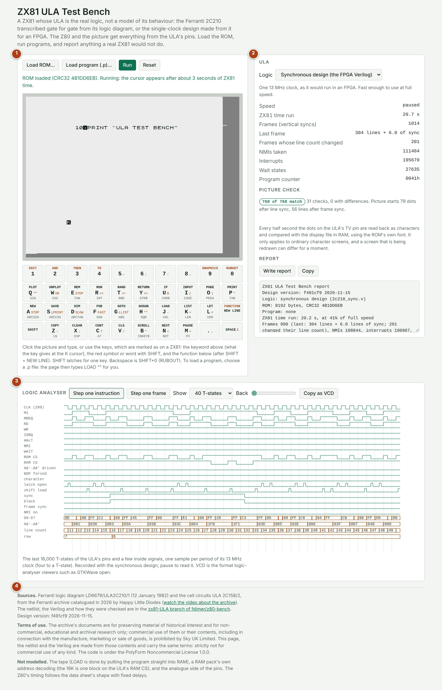
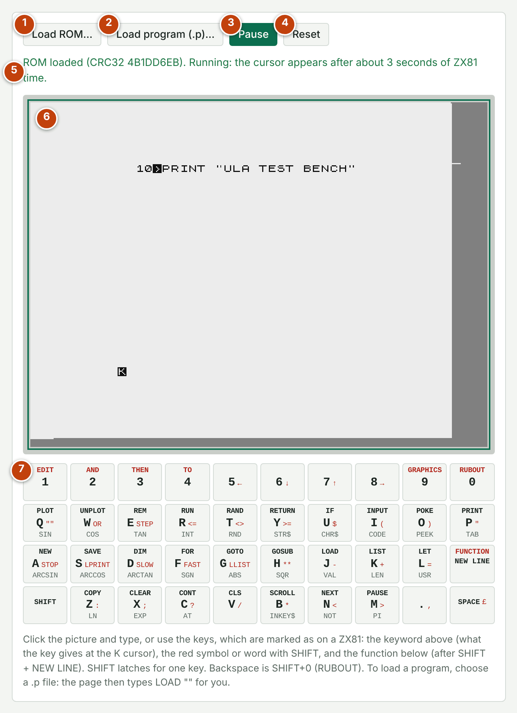
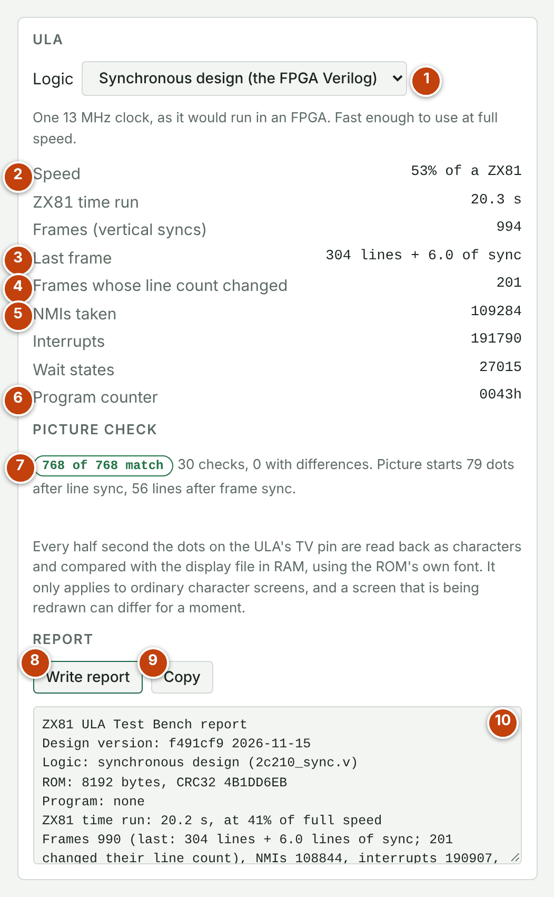
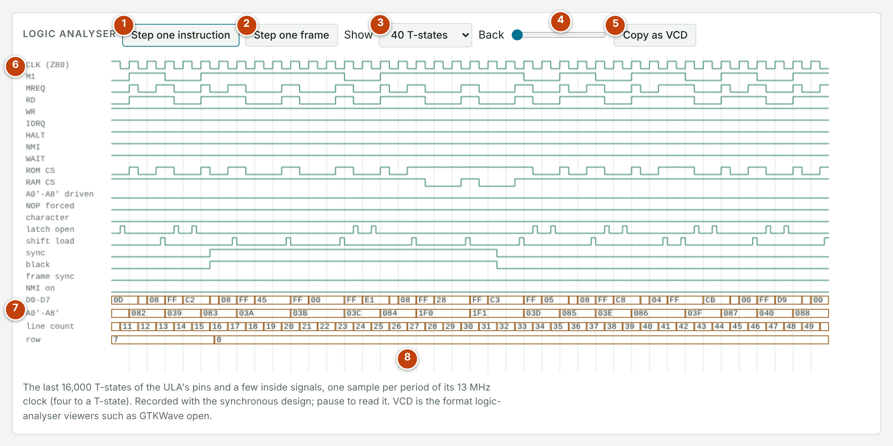

> LIST
ZX81 ULA Test Bench documentation
How to use the test bench, and how the ULA inside it is put together. The numbers in each list match the numbered markers on the screenshot above it.
User guide
The test bench is a 16K ZX81 in which nothing of the ULA is modelled: a Z80 core runs the real ROM, and every bus cycle goes onto the pins of the Ferranti 2C210's logic, as transcribed from Ferranti's own drawing. What the Z80 reads during the picture, when it is interrupted, when it waits, which memory chip is selected and every dot of the TV picture all come back from those pins. It is made for checking the ULA against real programs. For simply using a ZX81, the ZX80 and ZX81 emulator is quicker and has the debugging tools.
Quick start
- Press Load ROM… and choose your own 8 KB ZX81 ROM image. The ROM is Sinclair's and is not included. Your browser keeps it, so you only load it once.
- The machine starts at once. The K cursor appears after about 3 seconds of ZX81 time.
- Click the picture and type, or press the keys drawn under it.
- To run a program, press Load program (.p)… and choose a
.pfile. The page typesLOAD ""for you; then typeRUN(the R key, then Enter). - If the machine does anything a real ZX81 would not, press Write report and send the report with a description of what you saw.
The page

- The machine: the ROM and program buttons, the TV picture and the keyboard.
- The instruments: which ULA logic runs, the meters, the picture check and the report.
- Logic analyser: the ULA's pins and some inside signals over the last 16,000 T-states.
- Sources, terms of use and what is not modelled, with the design version the page was built from.
The machine and the keyboard

- Load ROM…: takes an 8,192-byte ZX81 ROM image; a file of any other size is refused. The message shows its CRC32. The ROM is saved in your browser and loaded again the next time you open the page.
- Load program (.p)…: puts a ZX81
.pfile in the tape player and typesLOAD ""at the K cursor. The tape signal itself is not modelled: when the ROM starts reading the tape, the program is put straight into RAM. Programs that need more than the bench's 16K are refused. - Run / Pause: runs the machine at no more than a real ZX81's speed. Paused, the meters, the picture and the logic analyser show where it stopped.
- Reset: starts the machine again from power-on, as if it had been switched off and on.
- Message: what the page has just done, or why it refused a file.
- Picture: the last whole frame, made from the dots on the ULA's TV pin: white, black or grey where there is no picture (the borders of the frame and the sync). When the machine cannot finish frames quickly enough to look live (the gate-level logic, or stepping), the frame being drawn is laid over the last one, so you can see it build. Click the picture to give it the keyboard.
- Keyboard: the 40 keys, marked as on a ZX81: the keyword above (what the key gives at the K cursor), the red symbol or word with SHIFT, and the function below (after SHIFT + NEW LINE). On screen, SHIFT latches for the next key. On your own keyboard, letters, digits, space and full stop are the ZX81 keys, Shift is SHIFT, Enter is NEW LINE and Backspace is SHIFT + 0 (RUBOUT).
The ULA, the meters and the picture check

- Logic: which ULA runs the machine. Synchronous design is the single-clock version made for an FPGA, and runs at about a real ZX81's speed. Gate-level netlist is every gate and flip-flop of the 2C210 with its own delay, and runs at about a hundredth of full speed: the ROM takes some minutes to reach the cursor. Changing it restarts the machine. See The two ULAs.
- Speed: how fast the machine is running, as a share of a real ZX81. Under it, ZX81 time run (the time the machine has run, in ZX81 seconds) and Frames, the vertical syncs seen on the ULA's TV pin.
- Last frame: the lines in the last frame and the length of its vertical sync, in lines. A ZX81 at the cursor gives 304 lines and 6.0 lines of sync.
- Frames whose line count changed: how many frames had a different number of lines from the one before. A key going down or up changes the line count for a few frames; that is the ROM's own timing. A count that keeps rising with nothing being pressed is worth reporting.
- NMIs taken: the non-maskable interrupts the Z80 took from the ULA's NMI pin, one for each line above and below the picture in SLOW mode. Under it, Interrupts (the Z80's interrupt acknowledges, one for each line of the picture) and Wait states (T-states the Z80 was held by the ULA's NMI through the board's WAIT transistor).
- Program counter: where the Z80 is in the ROM or the program.
- Picture check: every half second, the dots on the TV pin are read back as characters, using the ROM's own font, and compared with the display file in RAM. It applies only to ordinary character screens that have stood still for two checks: green is 768 of 768 match; red gives the number of character cells that differ. The line beside it counts the checks and gives where the picture starts (dots after line sync, lines after frame sync). It says no picture in FAST mode, LOAD and SAVE, when there is no frame sync.
- Write report: writes a summary of the run into the box (see Reporting what you find).
- Copy: copies the report, writing it first if the box is empty. If your browser does not allow it, the report is selected so you can copy it yourself.
- Report: the text to paste into an issue or an email.
Logic analyser

- Step one instruction: pauses the machine and runs one Z80 instruction.
- Step one frame: pauses and runs until the next vertical sync (at most four frames' worth of T-states), then runs the picture check on the frame.
- Show: how much to draw: 16, 40 or 120 T-states, or two whole lines (414 T-states).
- Back: moves the view back through the recording, up to its start.
- Copy as VCD: copies the whole recording in Value Change Dump format, which logic-analyser viewers such as GTKWave open. Each signal and bus becomes one variable; the time unit is the nanosecond.
- Signals: the ULA's pins and some inside signals, drawn at the level on the pin, so the control lines and selects, which are active low, are low while active. The pins are CLK (the Z80's clock), M1, MREQ, RD, WR, IORQ, HALT, NMI, WAIT, ROM CS and RAM CS. Inside the ULA, drawn high while true: A0'–A8' driven (the ULA is putting the font address on the ROM), NOP forced (the ULA is pulling the data lines to a NOP for a character), character (a character fetch is decoded), latch open (the character latch), shift load (the font byte loaded into the shift register), sync, black, frame sync and NMI on.
- Buses: the data bus as the ULA sees it (D0–D7), the address it drives or sees on A0'–A8', the line counter (0 to 206) and the character row counter (0 to 7), the first two in hexadecimal, the counters in decimal.
- T-states: the faint grid lines mark where each T-state starts, as the Z80's clock rises.
The recording holds 65,536 samples, one per period of the ULA's 13 MHz clock (four to a T-state), so it covers the last 16,000 T-states or so. It records only with the synchronous design; with the gate-level netlist it stays empty. Pause the machine to read it: it is drawn when the machine pauses or steps.
Reporting what you find
The report gives everything needed to repeat the run: the design version the page was built from, which logic ran, the ROM's size and CRC32, the program loaded (name, size and CRC32), the ZX81 time run and speed, the frame, NMI, interrupt and wait-state counts with the program counter, the picture check's results and your browser. It ends with a space for what you saw. Write down what a real ZX81 does differently, and if you can, copy the logic analyser's VCD from the moment it happened.
Issues and reports go to the zx81-ULA branch of fdimer/z80-bench.
Hardware reference
What is being tested
The ZX81's ULA is a Ferranti uncommitted logic array: a sea of identical bipolar gates on a chip, connected by a final metal layer to make Sinclair's design. Inside a ZX81 it makes the clock, decodes the memory and the keyboard port, times the TV lines, makes the NMIs that run the picture, forces NOPs onto the Z80's data bus while the display file is read, puts the font address on the ROM and shifts out the dots. The ZX81s modelled here have the 2C210, drawn by Ferranti on 12 January 1982 (drawing LD6679/ULA2C210/1).
The drawing was transcribed into a netlist, one line per gate, flip-flop or pin with its square on the drawing's grid, so every entry can be checked against the original. Two polarities that the drawing leaves to the circuit diagram (the ROM and RAM select cells, and the clock output) were settled by Ferranti's cell circuits, ULA 2C158/2. The aim is a description accurate enough to build a replacement chip from, for anyone repairing a machine for their own use. The netlist, the Verilog and the notes on how each was checked are in the repository; the drawings themselves are not.
The closed loop
In an ordinary emulator the ULA is code that behaves like the chip. Here the ULA is only logic, and the rest of the ZX81 is wired to its pins:
- The Z80 runs T-state by T-state, timed from the ULA's own clock pin. Its address, MREQ, IORQ, RD, WR, M1 and HALT go to the ULA's inputs.
- The data bus is what the board makes of it: when the ULA pulls the data lines low (the NOP during a character fetch, the keyboard during a port read), the Z80 reads what the ULA drives, not what the memory holds.
- The memory is selected by the ULA's ROM CS and RAM CS pins, and the ROM's low address lines come from the ULA's A0'–A8' while it reads the font.
- NMI and WAIT come from the ULA's NMI pin. On the board, transistor TR1 turns NMI into WAIT while the Z80 is not halted; the bench does the same.
- The picture is the TV/TAPE pin, read every dot: sync, black or white.
- The keyboard is the five KBD lines, read by the ULA during a port read. The USA/UK link is open (UK, 50 Hz).
The two ULAs
The gate-level netlist (2c210.net) is the drawing itself: 189 gates, flip-flops and pin drivers, simulated event by event. Each gate's delay comes from Ferranti's table of gate delays by its power (marked R, R/2 or R/3 on the drawing), its inputs and its load, from 2.8 ns to 26 ns. Like the chip, it makes its latch, load and reset pulses from those delays. It runs at about a hundredth of a real ZX81's speed.
The synchronous design (2c210_sync.v) does the same job with one 13 MHz clock, twice the ZX81's 6.5 MHz, so that it can go into an FPGA. A T-state is four clock periods. Every pulse the chip makes from gate delays becomes an edge of that clock:
| In the chip | Made from | In the synchronous design |
|---|---|---|
| Character latch open | Q19 low and OSC high, during M1 | taken on the edge that ends the third quarter of the T-state |
| NOP on the data lines | M1, a character, latch closed | the same, combinational |
| Shift register load | a 35 ns pulse after Q19 rises, if MREQ is high | the edge that starts a T-state |
| Dot clock | OSC rising | two edges in each T-state |
| Line counter | ripple counter on Q19 falling, cleared at 207 or by the interrupt acknowledge | 0 to 206, stepped once a T-state |
| NMI and frame-sync latches | cross-coupled gates, and a flip-flop clocked by MREQ | registers, set on the next clock edge (at most 77 ns later) |
| Memory selects, keyboard port, address enable | combinational | combinational |
The page builds the Verilog into JavaScript when it is made, so what runs is the text of the design. Its NMI and sync come about 95 ns (0.3 of a T-state) earlier than the gate-level model's, because the ripple counter's delay is gone; everything else matches.
Lines, frames and the picture
- Lines: the ULA's line counter counts T-states from 0 to 206, so a line is 207 T-states (about 64 µs at 3.25 MHz). Line sync, and with NMI on the NMI, is high for counts 16 to 31. An interrupt acknowledge restarts the counter, which is how the ROM lines the picture up with its own timing.
- Frames: a frame sync starts when the ROM reads the keyboard port with the NMI off, and ends with the next OUT. At the cursor, a frame is 304 lines and a sync of 6 lines, 50 a second.
- Characters: while the Z80 "executes" the display file, the ULA sees each character byte as it is fetched, forces a NOP onto the data bus, latches the character's six low bits and, in the refresh cycle, puts them with the row counter on A0'–A8' to read the font byte from the ROM. The byte is loaded into the shift register as the next M1 begins and shifted out at 6.5 MHz, two dots a T-state; bit 7 of the character inverts it.
- Rows: the row counter (0 to 7) steps on each line sync and is held at 0 by the frame sync.
The ULA's pins
What the 40 pins do, from Ferranti's drawing, Sinclair's circuit diagram and Timex's specification for the chip (with Ferranti's handwritten replies). These are the electrical facts a board that replaces the chip would have to meet.
| Pins | Signal | In the chip |
|---|---|---|
| 40, 34 | +5 V, 0 V | bipolar logic |
| 32, 30, 28, 26, 24, 23, 21, 19 | D0–D7 | TTL inputs; open-collector outputs with 5K pull-ups that sink 8 mA (against the 470 Ω resistors to the memory) |
| 33, 31, 29, 27, 25 | KBD0–KBD4 | inputs with a higher threshold (high 2.7 V, low 1.0 V) and 16K pull-ups |
| 22 | USA/UK | as the keyboard inputs; the link, when fitted, grounds it |
| 20 | TAPE IN | low 0.2 V, high 1.0 V, no hysteresis ("there is no hysteresis on our i/p", Ferranti) |
| 35 | OSC | on-chip oscillator with a 6.5 MHz ceramic resonator |
| 9, 10, 6, 8, 7, 17, 18, 11 | MREQ, M1, RD, WR, IORQ, HALT, A15, A14 | TTL inputs with 16K pull-ups |
| 5, 4, 3, 36, 37, 38, 39, 1, 2 | A0'–A8' | tri-state outputs, driven through the 1K resistors against the Z80 while the font is read; A0' and A1' are also inputs |
| 14 | Clock out | to transistor TR2, which drives the Z80's clock |
| 15 | NMI | open collector, 5K pull-up on the chip |
| 13, 12 | ROM CS, RAM CS | low within 68 ns (ROM) and 56 ns (RAM) of MREQ falling, Ferranti's maxima |
| 16 | TV/TAPE | one pin, three levels: white 4.0 V, black 3.0 V, sync 0.1 V; also the tape output |
With the gate delays, the netlist gives RAM CS 48 ns and ROM CS 48 ns after MREQ falls, and A0'–A8' driven 62 ns after M1 rises (Ferranti's maximum: 93 ns). One margin is tight: the font byte is loaded as the next M1 begins, in a pulse that ends about 70 ns after the Z80's clock rises, so the picture depends on the ROM holding the old byte that long. In the netlist the picture is right when the Z80's address delay plus the ROM's output hold is 33 ns or more.
How far it is checked
- Against an emulator: on a 16K ZX81 with the real ROM, a screen of normal and inverse characters and a key held down, every opcode fetch, font address, memory select, port read, row count and dot from the gate-level ULA matches the ZX80 and ZX81 emulator, and vertical sync starts and ends within 3 T-states of it. The gate level corrected two of that emulator's constants: the sync starts 20 T-states after the interrupt acknowledge begins, and lasts 16.
- Closed loop: with the ULA in charge, the ROM boots to the cursor on both engines; up to the first NMI the Z80 runs instruction for instruction as in the emulator. Over the first 0.75 s the netlist and the synchronous design give the same frames, NMIs, interrupts, wait states and program counter.
- Programs:
.pprograms load and run, with the same screens as in the emulator; 3D Monster Maze, which uses machine code, inverse and graphics characters, runs through its opening screens. The picture check gives 768 of 768 on the screens tried. - The Verilog: both Verilog files compile in Yosys, and the synchronous design gives the same results after Yosys has synthesized it to gates.
- Not yet: no real hardware. The design has not been placed in an FPGA, its pin wrapper (tri-state and open-drain pins) has not been simulated, and nothing has been compared with a working ZX81's signals. That is what this bench is for.
What is not modelled
- The tape signal: LOAD puts the program straight into RAM; nothing reads TAPE IN or records the tape side of TV/TAPE.
- A RAM pack's own decoding: the 16K is one block on the ULA's RAM CS.
- The analogue side of the pins: levels, thresholds and loading are not simulated; each pin is a logic value.
- The Z80's timing: its bus cycles follow the data sheet's shape with fixed delays.
- 60 Hz: the USA/UK link is always open, so the machine is always the 50 Hz UK one.
- The earlier 2C184 chip: its netlist is in the repository, for comparison, but only partly transcribed and not on the bench.
Sources and terms of use
Ferranti logic diagram LD6679/ULA2C210/1 (12 January 1982) and the cell circuits ULA 2C158/2, from the Ferranti archive catalogued in 2026 by Happy Little Diodes (watch the video about the archive); Sinclair's ZX81 circuit diagram; and Timex's engineering specification for the chip with Ferranti's replies. The netlist, the Verilog and how they were checked are in the zx81-ULA branch of fdimer/z80-bench.
The archive's documents are for preserving material of historical interest and for non-commercial, educational and archival research only. Commercial use of them or their contents, including in connection with the manufacture, marketing or sale of goods, is prohibited by Sky UK Limited. The netlist, the Verilog, the test bench and this documentation are made from those contents and carry the same terms: strictly not for commercial use of any kind. The code is under the PolyForm Noncommercial License 1.0.0. The ZX81 ROM is not part of this project.